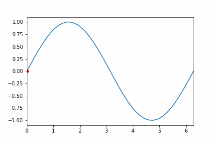
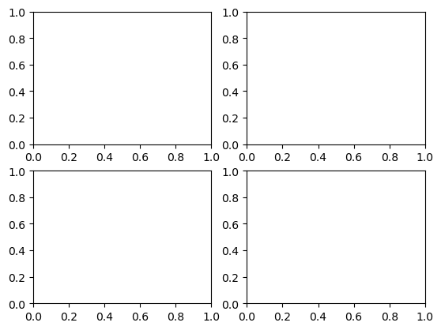
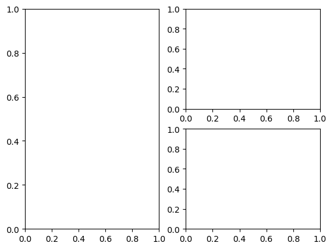
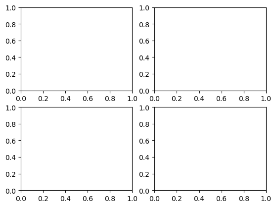
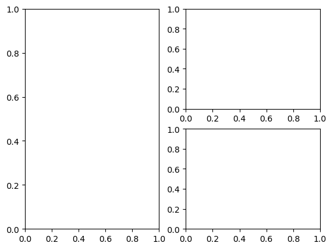

0. Less 2?#
…
In case of doubt … it is just a hobby not for “production”#
```{tableofcontents}#
```#
```{contents}#
:local:#
```#
test-Gif-ok#
Basciallly#
set working directory under Juno is a must!!!#
under Juno Connect to my MacMini,#
it works yesterday but not today, no idea
under iPadOS#
tk and qt does not expect and actually do not work
imshow does not work as GIF display hence use markdown
I have to save the animation into GIF and display using markdown as in here
under markdown, there is no need of ./ and in fact having those may not work ... try to re-run all with new jernel seems to work the second time
under MacOS (macmini M1)#
the display under markdown work
in MacOS only if it has a directory there like ./ or img/
otherwise not working
if you run the Gif under safari the Gif is generated correctly though
for the option
- Work under MacOS (in seperate windows and has to wait a bit) - not under ipados
- Work under MacOS (in seperate windows and has to wait a bit) - not under ipados
- not work under MacOS - work but only as non-interactive backend
as default message said the TkAgg is non-interactive and hence cannot plt.show()
# see https://stackoverflow.com/questions/56423221/saving-animated-matplotlib-chart-to-gif
import os
import numpy as np
import matplotlib.pyplot as plt
import matplotlib.animation as animation
#%matplotlib qt
# %matplotlib tk
%matplotlib
TWOPI = 2*np.pi
fig, ax = plt.subplots()
t = np.arange(0.0, TWOPI, 0.001)
s = np.sin(t)
l = plt.plot(t, s)
ax = plt.axis([0,TWOPI,-1.1,1.1])
redDot, = plt.plot([0], [np.sin(0)], 'ro')
def animate(i):
'''
'''
redDot.set_data(i, np.sin(i))
# got warning message
# seems later would not support this
return redDot,
# create animation using the animate() function with no repeat
myAnimation = animation.FuncAnimation(fig, animate, frames=np.arange(0.0, TWOPI, 0.03), \
interval=100, blit=True, repeat=False)
myAnimation.save('test-Gif-ok3U2Alex.gif', writer='pillow', fps=30)
myAnimation.save('img/test-Gif-ok3Alex.gif', writer='pillow', fps=30)
plt.show()
# under iPad
# <ipython-input-8-c07342f6b45b>:59: UserWarning: Matplotlib is currently using TkAgg,
# which is a non-GUI backend, so cannot show the figure. plt.show()
Using matplotlib backend: <object object at 0x107eaf330>
/var/folders/33/krstvgns2rncl74r18tkv6_80000gn/T/ipykernel_32039/3771949022.py:26: MatplotlibDeprecationWarning: Setting data with a non sequence type is deprecated since 3.7 and will be remove two minor releases later
redDot.set_data(i, np.sin(i))
/var/folders/33/krstvgns2rncl74r18tkv6_80000gn/T/ipykernel_32039/3771949022.py:26: MatplotlibDeprecationWarning: Setting data with a non sequence type is deprecated since 3.7 and will be remove two minor releases later
redDot.set_data(i, np.sin(i))
/var/folders/33/krstvgns2rncl74r18tkv6_80000gn/T/ipykernel_32039/3771949022.py:26: MatplotlibDeprecationWarning: Setting data with a non sequence type is deprecated since 3.7 and will be remove two minor releases later
redDot.set_data(i, np.sin(i))
# in code cell
import matplotlib.pyplot as plt
import matplotlib.image as mpimg
imgU = mpimg.imread("test-Gif-ok3U2Alex.gif") # this work as well
imgA = mpimg.imread("img/test-Gif-ok3Alex.gif") # this work
plt.imshow(imgU)
plt.imshow(imgA)
# only 1 img but if you just do one both work
# but no animation under iPad Juno or MacOS
<matplotlib.image.AxesImage at 0x11017a450>
work#


import os
x=os.getcwd()
os.listdir(os.getcwd())
print(f"{os.getcwd()=}")
print(f"{x=}")
print(f"{os.listdir(x)=}")
os.getcwd()='/Users/ngcchk/Documents/GitHub/gpd2-win-unity1/ipadred-rain/imgno_book1/imgnobk9'
x='/Users/ngcchk/Documents/GitHub/gpd2-win-unity1/ipadred-rain/imgno_book1/imgnobk9'
os.listdir(x)=['JB_logo.png', 'test-Gif-ok2.gif', '.DS_Store', 'media copy', 'requirements.txt', 'imgnobk9References.bib', 'MacB9i-matlib-sample-animations.ipynb', 'lines_4.mp4', 'MacB9c-test3.ipynb', 'teset_7_particle_box.mp4', 'MacB9e-test-Gif-ok.ipynb', 'introAnimate.md', 'MacB9-Animate.ipynb', 'nongui_backend.png', 'test-Gif-ok3U2Alex.gif', 'img', 'MacB9d-test-iter.ipynb', '_toc.yml', 'im_4.mp4', 'Less.png', '_build', '_config.yml', 'iter-ok1.gif', '.ipynb_checkpoints', 'MacB9e-test-Gif-ok-CopyForAlex.ipynb', 'MacB9f-test-Juno-2.ipynb', 'Mlp3-cook1.ipynb', 'main', 'MacB9h-DB7-sync.ipynb', 'myAnimation.gif', 'MacB9b-TestPhyMSUanimate.ipynb']
import platform
print(f"{platform.system()=}")
# may need in the future to handle os difference
# but iPadOS and MacOS all report the same thing!!!
# not sure about ultimate target jypyter notebook 2b test
print(f"{platform.release()=}")
print(f"{platform.version()=}")
# ipad same as MacOS it seems though ... !!!
'''
platform.system()='Darwin'
platform.release()='22.6.0'
platform.version()='Darwin Kernel Version 22.6.0: Wed Jun 28 20:51:42 PDT 2023; root:xnu-8796.142.1~1/RELEASE_ARM64_T8020'
'''
platform.system()='Darwin'
platform.release()='22.6.0'
platform.version()='Darwin Kernel Version 22.6.0: Wed Jul 5 22:22:52 PDT 2023; root:xnu-8796.141.3~6/RELEASE_ARM64_T8103'
"\nplatform.system()='Darwin'\nplatform.release()='22.6.0'\nplatform.version()='Darwin Kernel Version 22.6.0: Wed Jun 28 20:51:42 PDT 2023; root:xnu-8796.142.1~1/RELEASE_ARM64_T8020'\n"
MacB9-Animate#
1. Less is More Thinking#
Thinking in Less Important Topics
May be just Frozen, Star Wars, Digital Currency …
DB7-sync#
# 581.4 +\
# 96 +\
total = 123.2 +\
148.4 +\
63.6 +\
70.3 +\
379.2 +\
0774.9 +\
225.6 +\
39.2 +\
0103.6 +\
163.1 +\
318.5 +\
148 +\
20.2 +\
379.4 +\
94.1 +\
189.5 +\
332.8 +\
181.5 +\
489 +\
85.4 +\
99.7 +\
792 +\
172.7 +\
178.3 +\
0
print(total)
5572.2
test-Gif-ok#
Gif sample#
mainly from matplotlib …#
# https://stackoverflow.com/questions/56423221/saving-animated-matplotlib-chart-to-gif
import os
import numpy as np
import matplotlib.pyplot as plt
import matplotlib.animation as animation
from matplotlib import rcParams
#%matplotlib qt
#%matplotlib tk
#%matplotlib
# configure full path for ImageMagick
# seems to work in iOS and macOS !!!
#rcParams['animation.convert_path'] = r'/usr/bin/convert'
TWOPI = 2*np.pi
fig, ax = plt.subplots()
t = np.arange(0.0, TWOPI, 0.001)
s = np.sin(t)
l = plt.plot(t, s)
ax = plt.axis([0,TWOPI,-1.1,1.1])
redDot, = plt.plot([0], [np.sin(0)], 'ro')
def animate(i):
'''
/var/folders/_y/zx724y_158bf6f_4nxr4dm540000gn/T/ipykernel_72553/3641039220.py:24: MatplotlibDeprecationWarning: Setting data with a non sequence type is deprecated since 3.7 and will be remove two minor releases later
redDot.set_data(i, np.sin(i))
/var/folders/_y/zx724y_158bf6f_4nxr4dm540000gn/T/ipykernel_72553/3641039220.py:24: MatplotlibDeprecationWarning: Setting data with a non sequence type is deprecated since 3.7 and will be remove two minor releases later
redDot.set_data(i, np.sin(i))
'''
redDot.set_data(i, np.sin(i)) # seems later would not support this
return redDot,
# create animation using the animate() function with no repeat
myAnimation = animation.FuncAnimation(fig, animate, frames=np.arange(0.0, TWOPI, 0.03), \
interval=100, blit=True, repeat=False)
# 0.01 quit slow
# 0.05
# save animation at 30 frames per second
#myAnimation.save('myAnimation.gif', writer='imagemagick', fps=30)
#plt.rcParams["figure.figsize"] = [7.50, 3.50]
#plt.rcParams["figure.autolayout"] = True
#dir_name = "C:/Windows/Temp/"
#dir_name = "image"
#plt.rcParams["savefig.directory"] = os.chdir(os.path.dirname(dir_name))
myAnimation.save('img/test-Gif-ok2.gif', writer='pillow', fps=30)
myAnimation.save('test-Gif-ok2.gif', writer='pillow', fps=30)
# seems default
plt.show()
/var/folders/33/krstvgns2rncl74r18tkv6_80000gn/T/ipykernel_32027/2052094205.py:36: MatplotlibDeprecationWarning: Setting data with a non sequence type is deprecated since 3.7 and will be remove two minor releases later
redDot.set_data(i, np.sin(i)) # seems later would not support this
/var/folders/33/krstvgns2rncl74r18tkv6_80000gn/T/ipykernel_32027/2052094205.py:36: MatplotlibDeprecationWarning: Setting data with a non sequence type is deprecated since 3.7 and will be remove two minor releases later
redDot.set_data(i, np.sin(i)) # seems later would not support this
/var/folders/33/krstvgns2rncl74r18tkv6_80000gn/T/ipykernel_32027/2052094205.py:36: MatplotlibDeprecationWarning: Setting data with a non sequence type is deprecated since 3.7 and will be remove two minor releases later
redDot.set_data(i, np.sin(i)) # seems later would not support this
# in code cell
import matplotlib.pyplot as plt
import matplotlib.image as mpimg
imgi2 = mpimg.imread("img/test-Gif-ok2.gif")
img2 = mpimg.imread("test-Gif-ok2.gif")
plt.imshow(imgi2) # but no animation
plt.imshow(img2) # but no animation
<matplotlib.image.AxesImage at 0x1064114d0>

## set working directory
in markdown one can try this:#
not working#
`


[SegmentLocal]("img/Gif-ok.gif" "segment")

[SegmentLocal](img/test-Gif-ok.gif "segment")
[SegmentLocal]("test-Gif-ok.gif" "segment")
`
work#


import os
x=os.getcwd()
os.listdir(os.getcwd())
print(f"{os.getcwd()=}")
print(f"{x=}")
print(f"{os.listdir(x)=}")
os.getcwd()='/Users/ngcchk/Documents/GitHub/gpd2-win-unity1/ipadred-rain/imgno_book1/imgnobk9'
x='/Users/ngcchk/Documents/GitHub/gpd2-win-unity1/ipadred-rain/imgno_book1/imgnobk9'
os.listdir(x)=['JB_logo.png', 'test-Gif-ok2.gif', '.DS_Store', 'media copy', 'requirements.txt', 'imgnobk9References.bib', 'MacB9i-matlib-sample-animations.ipynb', 'lines_4.mp4', 'MacB9c-test3.ipynb', 'teset_7_particle_box.mp4', 'MacB9e-test-Gif-ok.ipynb', 'introAnimate.md', 'MacB9-Animate.ipynb', 'nongui_backend.png', 'test-Gif-ok3U2Alex.gif', 'img', 'MacB9d-test-iter.ipynb', '_toc.yml', 'im_4.mp4', 'Less.png', '_build', '_config.yml', 'iter-ok1.gif', '.ipynb_checkpoints', 'MacB9e-test-Gif-ok-CopyForAlex.ipynb', 'MacB9f-test-Juno-2.ipynb', 'Mlp3-cook1.ipynb', 'main', 'MacB9h-DB7-sync.ipynb', 'myAnimation.gif', 'MacB9b-TestPhyMSUanimate.ipynb']
import platform
print(f"{platform.system()=}")
print(f"{platform.release()=}")
print(f"{platform.version()=}")
# ipad
'''
platform.system()='Darwin'
platform.release()='22.6.0'
platform.version()='Darwin Kernel Version 22.6.0: Wed Jun 28 20:51:42 PDT 2023; root:xnu-8796.142.1~1/RELEASE_ARM64_T8020'
'''
platform.system()='Darwin'
platform.release()='22.6.0'
platform.version()='Darwin Kernel Version 22.6.0: Wed Jul 5 22:22:52 PDT 2023; root:xnu-8796.141.3~6/RELEASE_ARM64_T8103'
"\nplatform.system()='Darwin'\nplatform.release()='22.6.0'\nplatform.version()='Darwin Kernel Version 22.6.0: Wed Jun 28 20:51:42 PDT 2023; root:xnu-8796.142.1~1/RELEASE_ARM64_T8020'\n"
test-iter#
import os
os.getcwd()
# os.chdir("")
'''
# ios
'/private/var/mobile/Containers/Shared/AppGroup/A224EFAB-AEB3-4B3B-A2A9-EE4282ED0D4A/File Provider Storage/Repositories/gpd2-win-unity1/ipadred-rain/info.computational_2_test/from_CP_MSU/Programs/PythonAnimations'
'''
"\n# ios\n'/private/var/mobile/Containers/Shared/AppGroup/A224EFAB-AEB3-4B3B-A2A9-EE4282ED0D4A/File Provider Storage/Repositories/gpd2-win-unity1/ipadred-rain/info.computational_2_test/from_CP_MSU/Programs/PythonAnimations'\n"
# https://matplotlib.org/stable/tutorials/introductory/usage.html#what-is-a-backend
import matplotlib
import matplotlib.pyplot as plt
# matplotlib.use('Agg') #'MacOS' ??
import pylab
#from pylab import *
import calendar
import numpy as np
fig, ax = plt.subplots() # Create a figure containing a single axes.
ax.plot([1, 2, 3, 4], [1, 4, 2, 3]) # Plot some data on the axes.
#plt.show()
[<matplotlib.lines.Line2D at 0x11c323b90>]

fig = plt.figure() # an empty figure with no Axes
fig, ax = plt.subplots() # a figure with a single Axes
fig, axs = plt.subplots(2, 2) # a figure with a 2x2 grid of Axes
# a figure with one axes on the left, and two on the right:
fig, axs = plt.subplot_mosaic([['left', 'right_top'],
['left', 'right_bottom']])
#plt.show()
<Figure size 640x480 with 0 Axes>
 



b = np.matrix([[1, 2], [3, 4]])
print(b)
b_asarray = np.asarray(b)
print(b_asarray)
# seems implicitly has plots
[[1 2]
[3 4]]
[[1 2]
[3 4]]
np.random.seed(19680801) # seed the random number generator.
data = {'a': np.arange(50),
'c': np.random.randint(0, 50, 50),
'd': np.random.randn(50)}
data['b'] = data['a'] + 10 * np.random.randn(50)
data['d'] = np.abs(data['d']) * 100
#print(data)
print(data['a'])
print(data['b'])
#print(f'{data['a']}') no work
#,\n,{b},\n,{c},\n,{d},\n')
fig, ax = plt.subplots(figsize=(5, 2.7), layout='constrained')
ax.scatter('a', 'b', c='c', s='d', data=data)
ax.set_xlabel('entry a')
ax.set_ylabel('entry b')
[ 0 1 2 3 4 5 6 7 8 9 10 11 12 13 14 15 16 17 18 19 20 21 22 23
24 25 26 27 28 29 30 31 32 33 34 35 36 37 38 39 40 41 42 43 44 45 46 47
48 49]
[ 4.8018808 -6.4972666 -11.2077656 6.322316 1.33391659
11.36202025 -5.18315173 9.64545151 8.93059413 -2.9619809
1.010722 10.5460328 6.02832418 13.15619153 7.92816087
22.2140083 20.64277678 25.26559419 18.93012033 -3.62283088
29.90723646 8.2618424 8.1226306 24.55220778 24.73672481
35.29148044 19.39618445 20.81129384 26.1046295 23.53964929
46.2580496 29.97454235 17.69996036 41.7538301 32.48260765
31.30030868 36.13983623 36.18332016 48.92477345 44.27782523
57.41677485 35.53675523 58.57367953 49.73629965 43.15151999
28.47595654 52.43563731 37.8567097 51.49878342 49.98087623]
Text(0, 0.5, 'entry b')

x = np.linspace(0, 2, 100) # Sample data.
# Note that even in the OO-style, we use `.pyplot.figure` to create the Figure.
fig, ax = plt.subplots(figsize=(5, 2.7), layout='constrained')
ax.plot(x, x, label='linear') # Plot some data on the axes.
ax.plot(x, x**2, label='quadratic') # Plot more data on the axes...
ax.plot(x, x**3, label='cubic') # ... and some more.
ax.set_xlabel('x label') # Add an x-label to the axes.
ax.set_ylabel('y label') # Add a y-label to the axes.
ax.set_title("Simple Plot") # Add a title to the axes.
ax.legend() # Add a legend.
<matplotlib.legend.Legend at 0x11ce44cd0>

x = np.linspace(0, 2, 100) # Sample data.
plt.figure(figsize=(5, 2.7), layout='constrained')
plt.plot(x, x, label='linear') # Plot some data on the (implicit) axes.
plt.plot(x, x**2, label='quadratic') # etc.
plt.plot(x, x**3, label='cubic')
plt.xlabel('x label')
plt.ylabel('y label')
plt.title("Simple Plot")
plt.legend()
<matplotlib.legend.Legend at 0x11cedd610>
use embedded#
https://matplotlib.org/stable/gallery/user_interfaces/index.html#user-interfaces#
def my_plotter(ax, data1, data2, param_dict):
"""
A helper function to make a graph.
"""
out = ax.plot(data1, data2, **param_dict)
return out
data1, data2, data3, data4 = np.random.randn(4, 100) # make 4 random data sets
fig, (ax1, ax2) = plt.subplots(1, 2, figsize=(5, 2.7))
my_plotter(ax1, data1, data2, {'marker': 'x'})
my_plotter(ax2, data3, data4, {'marker': 'o'})
[<matplotlib.lines.Line2D at 0x11cf96bd0>]

fig, ax = plt.subplots(figsize=(5, 2.7))
x = np.arange(len(data1))
ax.plot(x, np.cumsum(data1), color='blue', linewidth=3, linestyle='--')
l, = ax.plot(x, np.cumsum(data2), color='orange', linewidth=2)
l.set_linestyle(':')

# fig, axs = plt.subplots(2, 2, figsize=(4, 3), layout='constrained')
fig, axs = plt.subplots(1, 2, figsize=( 7, 3), layout='constrained')
fig.set_facecolor('thistle')
fig.suptitle('Super figure')
# axs = fig.subplots(2, 1, sharex=True)
# axs = fig.subplots(2, 1, sharey=True)
# axs = fig.subplots(2, 1, sharex=True)
axs[1].set_xlabel('1x [m]')
axs[1].set_ylabel('1y [t]')
axs[1].set_facecolor('yellow')
axs[1].set_title('axs1 title')
axs[0].set_xlabel('0x [m]')
axs[0].set_ylabel('0y [t]')
axs[0].set_facecolor('green')
axs[0].set_title('axs2 title')
Text(0.5, 1.0, 'axs2 title')
fig = plt.figure(layout='constrained', facecolor='lightskyblue')
fig.suptitle('Figure')
figL, figR = fig.subfigures(1, 2)
figL.set_facecolor('thistle')
axL = figL.subplots(2, 1, sharex=True)
axL[1].set_xlabel('x [m]')
figL.suptitle('Left subfigure')
figR.set_facecolor('paleturquoise')
axR = figR.subplots(1, 2, sharey=True)
axR[0].set_title('Axes 1')
figR.suptitle('Right subfigure')
Text(0.5, 0.98, 'Right subfigure')
# https://gist.github.com/matthewfeickert/84245837f09673b2e7afea929c016904
# non inter and aggg
import matplotlib
import matplotlib.pyplot as plt
import numpy as np
print("somethin")
#if __name__ == "__main__":
print(f"Interactive mode: {matplotlib.is_interactive()}")
# Agg is non-interactive and will not even import the GUI frameworks
# c.f.
# https://matplotlib.org/stable/tutorials/introductory/usage.html#what-is-a-backend
# c.f. https://twitter.com/tacaswell/status/1377122080664166408
matplotlib.use("agg")
print(f"matplotlib backend: {matplotlib.rcParams['backend']}")
x = np.linspace(0, 10, 1000)
y = np.sin(x)
fig, ax = plt.subplots()
ax.plot(x, y)
fig.savefig("nongui_backend.png")
#fig.show() # Errors as no GUI possible
#plt.show()
somethin
Interactive mode: True
matplotlib backend: agg
Some iterable#
An ITERABLE is:#
anything that can be looped over (i.e. you can loop over a string or file) or
anything that can appear on the right-side of a for-loop: for x in iterable: … or
anything you can call with iter() that will return an ITERATOR: iter(obj) or
an object that defines iter that returns a fresh ITERATOR, or it may have a getitem method suitable for indexed lookup.
An ITERATOR is an object:#
with state that remembers where it is during iteration,
with a next method that: returns the next value in the iteration updates the state to point at the next value signals when it is done by raising StopIteration and that is self-iterable (meaning that it has an iter method that returns self).
Notes: The next method in Python 3 is spelt next in Python 2, and The builtin function next() calls that method on the object passed to it.
For example:
s = 'cat' # s is an ITERABLE
# s is a str object that is immutable
# s has no state
# s has a __getitem__() method
t = iter(s) # t is an ITERATOR
# t has state (it starts by pointing at the "c"
# t has a next() method and an __iter__() method
next(t) # the next() function returns the next value and advances the state 'c'
next(t) # the next() function returns the next value and advances
# 'a'
next(t) # the next() function returns the next value and advances
# 't'
iter(t) is t # the iterator is self-iterable
#next(t) # next() raises StopIteration to signal that iteration is complete
#Traceback (most recent call last):
#...
#StopIteration
True
class Counter:
def __init__(self, low, high):
self.current = low - 1
self.high = high
def __iter__(self):
return self
def __next__(self): # Python 2: def next(self)
self.current += 1
if self.current < self.high:
return self.current
raise StopIteration
for c in Counter(3, 9):
print(c)
3
4
5
6
7
8
# https://stackoverflow.com/questions/7871338/creating-bar-charts-in-python
import matplotlib
matplotlib.use('Agg')
import pylab
#from pylab import *
import calendar
def webshow(img):
savefig(img,dpi=500)
print( 'Content-Type: text/html\n')
print('<img width="800" height="400" src="'+img+'" />')
sorted_list = ((1, 2),( 3,4 ), (5, 6) , (7, 8))
#np.linspace(0, 10, 1000)
genres = []
n = 0
for c in sorted_list:
genres.append(sorted_list[n][0])
n += 1
grosses = []
a = 0
for c in sorted_list:
grosses.append(sorted_list[a][1])
a += 1
pylab.clf()
#bar(arange(len(grosses)),grosses)
#xticks( arange(len(genres)),genres, rotation=80)
#webshow("barchart.png")
import numpy as np
import numpy as np
import matplotlib.pyplot as plt
import matplotlib.animation as animation
from matplotlib import rcParams
fig = plt.figure()
fig.subplots_adjust(bottom=0.2) # Remark 1
ax = fig.add_subplot(111)
ax.bar(np.arange(len(grosses)), grosses)
ax.ticklabel_format(style='plain') # Remark 2
ax.set_xticks(np.arange(len(genres)))
ax.set_xticklabels(genres, rotation=80)
TWOPI = 2*np.pi
redDot, = plt.plot([0], [np.sin(0)], 'ro')
def animate(i):
redDot.set_data(i, np.sin(i))
return redDot,
myAnimation = animation.FuncAnimation(fig, animate, frames=np.arange(0.0, TWOPI, 0.03), interval=10, blit=True, repeat=False)
myAnimation.save('iter-ok1.gif', writer='pillow', fps=30)
#savefig('barchart.png', dpi=500)
/var/folders/33/krstvgns2rncl74r18tkv6_80000gn/T/ipykernel_32020/3627587708.py:58: MatplotlibDeprecationWarning: Setting data with a non sequence type is deprecated since 3.7 and will be remove two minor releases later
redDot.set_data(i, np.sin(i))
/var/folders/33/krstvgns2rncl74r18tkv6_80000gn/T/ipykernel_32020/3627587708.py:58: MatplotlibDeprecationWarning: Setting data with a non sequence type is deprecated since 3.7 and will be remove two minor releases later
redDot.set_data(i, np.sin(i))
from collections.abc import Iterable
li = [1,2,3,4]
var1 = 16
print(isinstance(li, Iterable))
print(isinstance(var1, Iterable))
True
False
'''
# no pyecharts ...
from pyecharts.charts import Bar
from pyecharts import options as opts
# Define data
x_data = ['A', 'B', 'C', 'D', 'E']
y_data = [10, 20, 30, 40, 50]
# Create a basic bar chart
bar = Bar()
bar.add_xaxis(x_data)
bar.add_yaxis("", y_data)
# Set chart options
bar.set_global_opts(title_opts=opts.TitleOpts(title="Basic Bar Chart"))
# Render chart
bar.render("basic_bar_chart.html")
'''
'\n# no pyecharts ...\n\nfrom pyecharts.charts import Bar\nfrom pyecharts import options as opts\n\n# Define data\nx_data = [\'A\', \'B\', \'C\', \'D\', \'E\']\ny_data = [10, 20, 30, 40, 50]\n\n# Create a basic bar chart\nbar = Bar()\nbar.add_xaxis(x_data)\nbar.add_yaxis("", y_data)\n\n# Set chart options\nbar.set_global_opts(title_opts=opts.TitleOpts(title="Basic Bar Chart"))\n\n# Render chart\nbar.render("basic_bar_chart.html")\n'
'''
# not able to add bar yet
import matplotlib
import matplotlib.pyplot as plt
import numpy as np
import matplotlib.animation as animation
x = np.linspace(0, 10, 1000)
def update_figure():
y = np.sin(x)
return
figure, ax = plt.subplots()
anim = animation.FuncAnimation(figure, func=update_figure, fargs=(bar, iteration), frames=generator, interval=100, repeat=False)
f = r"c://Users/xx/Desktop/animation.gif"
writergif = animation.PillowWriter(fps=30)
anim.save(f, writer=writergif)
'''
'\n# not able to add bar yet\n\nimport matplotlib\nimport matplotlib.pyplot as plt\nimport numpy as np \nimport matplotlib.animation as animation\n\nx = np.linspace(0, 10, 1000)\ndef update_figure():\n y = np.sin(x)\n return\n\n\nfigure, ax = plt.subplots()\n\nanim = animation.FuncAnimation(figure, func=update_figure, fargs=(bar, iteration), frames=generator, interval=100, repeat=False)\n\n\n\nf = r"c://Users/xx/Desktop/animation.gif" \nwritergif = animation.PillowWriter(fps=30) \nanim.save(f, writer=writergif)\n'
mytuple = ("apple", "banana", "cherry")
myit = iter(mytuple)
print(next(myit))
print(next(myit))
print(next(myit))
apple
banana
cherry
'''
# the raise StopIteration can cause some issues
class MyNumbers:
def __iter__(self):
self.a = 1
return self
def __next__(self):
if self.a <= 120:
x = self.a
self.a += 1
return x
else:
raise StopIteration
myclass = MyNumbers()
myiter = iter(myclass)
#for x in myiter:
# print(x,",",end="")
# https://holypython.com/how-to-create-matplotlib-animations-the-ultimate-guide/
import random
import matplotlib
import matplotlib.pyplot as plt
from matplotlib.animation import FuncAnimation
fig = plt.figure(figsize=(15,15))
x,y = [], []
index= iter(myclass)
# MyContainer(1, "two", 3, 4.0)
#(1, 2, 3, 4, 1, 4, 1)
#()tuple # [] list]# np.arange (0.0, TWOPI, 0.1) #count()
def animate(i):
x.append(next(index))
y.append(random.randint(2,20))
plt.style.use("ggplot")
plt.plot(x,y)
ani = FuncAnimation(fig, animate, interval=300)
ani.save('ani.gif', writer='pillow', fps=30)
plt.show()
'''
'\n# the raise StopIteration can cause some issues\nclass MyNumbers:\n def __iter__(self):\n self.a = 1\n return self\n\n def __next__(self):\n if self.a <= 120:\n x = self.a\n self.a += 1\n return x\n else:\n raise StopIteration\n\nmyclass = MyNumbers()\nmyiter = iter(myclass)\n\n#for x in myiter:\n# print(x,",",end="")\n# https://holypython.com/how-to-create-matplotlib-animations-the-ultimate-guide/\n\n\n\n\nimport random\nimport matplotlib\nimport matplotlib.pyplot as plt\nfrom matplotlib.animation import FuncAnimation\n\nfig = plt.figure(figsize=(15,15))\n\n\nx,y = [], []\nindex= iter(myclass)\n# MyContainer(1, "two", 3, 4.0)\n#(1, 2, 3, 4, 1, 4, 1)\n#()tuple # [] list]# np.arange (0.0, TWOPI, 0.1) #count()\ndef animate(i):\n x.append(next(index))\n y.append(random.randint(2,20))\n plt.style.use("ggplot") \n plt.plot(x,y)\n\nani = FuncAnimation(fig, animate, interval=300)\nani.save(\'ani.gif\', writer=\'pillow\', fps=30)\nplt.show()\n'
# https://stackoverflow.com/questions/56423221/saving-animated-matplotlib-chart-to-gif
import numpy as np
import matplotlib.pyplot as plt
import matplotlib.animation as animation
from matplotlib import rcParams
# configure full path for ImageMagick
rcParams['animation.convert_path'] = r'/usr/bin/convert'
TWOPI = 2*np.pi
fig, ax = plt.subplots()
t = np.arange(0.0, TWOPI, 0.001)
s = np.sin(t)
l = plt.plot(t, s)
ax = plt.axis([0,TWOPI,-1,1])
redDot, = plt.plot([0], [np.sin(0)], 'ro')
def animate(i):
redDot.set_data(i, np.sin(i))
return redDot,
# create animation using the animate() function with no repeat
myAnimation = animation.FuncAnimation(fig, animate, frames=np.arange(0.0, TWOPI, 0.1), \
interval=10, blit=True, repeat=False)
# save animation at 30 frames per second
#myAnimation.save('myAnimation.gif', writer='imagemagick', fps=30)
myAnimation.save('myAnimation.gif', writer='pillow', fps=30)
/var/folders/33/krstvgns2rncl74r18tkv6_80000gn/T/ipykernel_32020/25224506.py:24: MatplotlibDeprecationWarning: Setting data with a non sequence type is deprecated since 3.7 and will be remove two minor releases later
redDot.set_data(i, np.sin(i))
/var/folders/33/krstvgns2rncl74r18tkv6_80000gn/T/ipykernel_32020/25224506.py:24: MatplotlibDeprecationWarning: Setting data with a non sequence type is deprecated since 3.7 and will be remove two minor releases later
redDot.set_data(i, np.sin(i))
test-Juno-2#
Random text now…#
Meon is different as it involves not a ruler holding by moving observator. Instead we have a moving observator with a fixed ocean layer relative to earth obversort.
effectively the spaceclike sude actualky maintain the length calculation using euclidian geometry or it draw an arc of \(\delta x_{0} = \gamma x \)
the point on the \(\tilde{ct}\) line proper time dot follow hyperbola (as \(s at x=0\) rotate against the curve \(\tilde{s}^{2} = (c\tilde{t})^{2} - \tilde{x}^{2})\). but the point of \(\tilde{x}\) at \(\tilde{x}\) follow \(\delta x_{0}\)
test3#
.. redirect-from:: /tutorials/introductory/animation_tutorial
Animations using Matplotlib#
Based on its plotting functionality, Matplotlib also provides an interface to
generate animations using the ~matplotlib.animation module. An
animation is a sequence of frames where each frame corresponds to a plot on a
~matplotlib.figure.Figure. This tutorial covers a general guideline on
how to create such animations and the different options available.
import matplotlib.pyplot as plt
import numpy as np
import matplotlib.animation as animation
# default nothing does not work here!!!
# %matplotlib
# %matplotlib qt
%matplotlib tk
Animation Classes#
The animation process in Matplotlib can be thought of in 2 different ways:
~matplotlib.animation.FuncAnimation: Generate data for first frame and then modify this data for each frame to create an animated plot.~matplotlib.animation.ArtistAnimation: Generate a list (iterable) of artists that will draw in each frame in the animation.
~matplotlib.animation.FuncAnimation is more efficient in terms of
speed and memory as it draws an artist once and then modifies it. On the
other hand ~matplotlib.animation.ArtistAnimation is flexible as it
allows any iterable of artists to be animated in a sequence.
FuncAnimation#
The ~matplotlib.animation.FuncAnimation class allows us to create an
animation by passing a function that iteratively modifies the data of a plot.
This is achieved by using the setter methods on various
~matplotlib.artist.Artist (examples: ~matplotlib.lines.Line2D,
~matplotlib.collections.PathCollection, etc.). A usual
~matplotlib.animation.FuncAnimation object takes a
~matplotlib.figure.Figure that we want to animate and a function
func that modifies the data plotted on the figure. It uses the frames
parameter to determine the length of the animation. The interval parameter
is used to determine time in milliseconds between drawing of two frames.
Animating using .FuncAnimation would usually follow the following
structure:
Plot the initial figure, including all the required artists. Save all the artists in variables so that they can be updated later on during the animation.
Create an animation function that updates the data in each artist to generate the new frame at each function call.
Create a
.FuncAnimationobject with the.Figureand the animation function, along with the keyword arguments that determine the animation properties.Use
.animation.Animation.saveor.pyplot.showto save or show the animation.
The update function uses the set_* function for different artists to
modify the data. The following table shows a few plotting methods, the artist
types they return and some methods that can be used to update them.
======================================== ============================= ===========================
Plotting method Artist Set method
======================================== ============================= ===========================
.Axes.plot .lines.Line2D ~.lines.Line2D.set_data
.Axes.scatter .collections.PathCollection ~.collections.\ PathCollection.set_offsets
.Axes.imshow .image.AxesImage AxesImage.set_data
.Axes.annotate .text.Annotation ~.text.Annotation.\ update_positions
.Axes.barh .patches.Rectangle ~.Rectangle.set_angle,
~.Rectangle.set_bounds,
~.Rectangle.set_height,
~.Rectangle.set_width,
~.Rectangle.set_x,
~.Rectangle.set_y,
~.Rectangle.set_xy
.Axes.fill .patches.Polygon ~.Polygon.set_xy
.Axes.add_patch(.patches.Ellipse) .patches.Ellipse ~.Ellipse.set_angle,
~.Ellipse.set_center,
~.Ellipse.set_height,
~.Ellipse.set_width
======================================== ============================= ===========================
Covering the set methods for all types of artists is beyond the scope of this
tutorial but can be found in their respective documentations. An example of
such update methods in use for .Axes.scatter and .Axes.plot is as follows.
fig, ax = plt.subplots()
t = np.linspace(0, 3, 40)
g = -9.81
v0 = 12
z = g * t**2 / 2 + v0 * t
v02 = 5
z2 = g * t**2 / 2 + v02 * t
scat = ax.scatter(t[0], z[0], c="b", s=5, label=f'v0 = {v0} m/s')
line2 = ax.plot(t[0], z2[0], label=f'v0 = {v02} m/s')[0]
ax.set(xlim=[0, 3], ylim=[-4, 10], xlabel='Time [s]', ylabel='Z [m]')
ax.legend()
def update(frame):
# for each frame, update the data stored on each artist.
x = t[:frame]
y = z[:frame]
# update the scatter plot:
data = np.stack([x, y]).T
scat.set_offsets(data)
# update the line plot:
line2.set_xdata(t[:frame])
line2.set_ydata(z2[:frame])
return (scat, line2)
ani = animation.FuncAnimation(fig=fig, func=update, frames=40, interval=30)
plt.show()
ArtistAnimation#
~matplotlib.animation.ArtistAnimation can be used
to generate animations if there is data stored on various different artists.
This list of artists is then converted frame by frame into an animation. For
example, when we use .Axes.barh to plot a bar-chart, it creates a number of
artists for each of the bar and error bars. To update the plot, one would
need to update each of the bars from the container individually and redraw
them. Instead, .animation.ArtistAnimation can be used to plot each frame
individually and then stitched together to form an animation. A barchart race
is a simple example for this.
fig, ax = plt.subplots()
rng = np.random.default_rng(19680801)
data = np.array([20, 20, 20, 20])
x = np.array([1, 2, 3, 4])
artists = []
colors = ['tab:blue', 'tab:red', 'tab:green', 'tab:purple']
for i in range(20):
data += rng.integers(low=0, high=10, size=data.shape)
container = ax.barh(x, data, color=colors)
artists.append(container)
ani = animation.ArtistAnimation(fig=fig, artists=artists, interval=400)
plt.show()
Animation Writers#
Animation objects can be saved to disk using various multimedia writers (ex: Pillow, ffpmeg, imagemagick). Not all video formats are supported by all writers. There are 4 major types of writers:
~matplotlib.animation.PillowWriter- Uses the Pillow library to create the animation.~matplotlib.animation.HTMLWriter- Used to create JavaScript-based animations.Pipe-based writers -
~matplotlib.animation.FFMpegWriterand~matplotlib.animation.ImageMagickWriterare pipe based writers. These writers pipe each frame to the utility (ffmpeg / imagemagick) which then stitches all of them together to create the animation.File-based writers -
~matplotlib.animation.FFMpegFileWriterand~matplotlib.animation.ImageMagickFileWriterare examples of file-based writers. These writers are slower than their pipe-based alternatives but are more useful for debugging as they save each frame in a file before stitching them together into an animation.
Saving Animations#
.. list-table:: :header-rows: 1
Writer
Supported Formats
~matplotlib.animation.PillowWriter.gif, .apng, .webp
~matplotlib.animation.HTMLWriter.htm, .html, .png
|
~matplotlib.animation.FFMpegWriter|~matplotlib.animation.FFMpegFileWriterAll formats supported by |ffmpeg|_:
ffmpeg -formats
|
~matplotlib.animation.ImageMagickWriter|~matplotlib.animation.ImageMagickFileWriterAll formats supported by |imagemagick|_:
magick -list format
.. |ffmpeg| replace:: ffmpeg
.. |imagemagick| replace:: imagemagick
To save animations using any of the writers, we can use the
.animation.Animation.save method. It takes the filename that we want to
save the animation as and the writer, which is either a string or a writer
object. It also takes an fps argument. This argument is different than the
interval argument that ~.animation.FuncAnimation or
~.animation.ArtistAnimation uses. fps determines the frame rate that the
saved animation uses, whereas interval determines the frame rate that
the displayed animation uses.
Below are a few examples that show how to save an animation with different writers.
Pillow writers::
ani.save(filename=”/tmp/pillow_example.gif”, writer=”pillow”) ani.save(filename=”/tmp/pillow_example.apng”, writer=”pillow”)
HTML writers::
ani.save(filename=”/tmp/html_example.html”, writer=”html”) ani.save(filename=”/tmp/html_example.htm”, writer=”html”) ani.save(filename=”/tmp/html_example.png”, writer=”html”)
FFMpegWriter::
ani.save(filename=”/tmp/ffmpeg_example.mkv”, writer=”ffmpeg”) ani.save(filename=”/tmp/ffmpeg_example.mp4”, writer=”ffmpeg”) ani.save(filename=”/tmp/ffmpeg_example.mjpeg”, writer=”ffmpeg”)
Imagemagick writers::
ani.save(filename=”/tmp/imagemagick_example.gif”, writer=”imagemagick”) ani.save(filename=”/tmp/imagemagick_example.webp”, writer=”imagemagick”) ani.save(filename=”apng:/tmp/imagemagick_example.apng”, writer=”imagemagick”, extra_args=[“-quality”, “100”])
(the extra_args for apng are needed to reduce filesize by ~10x)
test phy msu animation#
import os
os.getcwd()
# os.chdir("")
'/Users/ngcchk/Documents/GitHub/gpd2-win-unity1/ipadred-rain/imgno_book1/imgnobk9'
import os
os.listdir(os.getcwd())
#os.listdir("/var/mobile/Containers/Data/Application/03AF0984-E7D3-402A-AC98-38B4F54E4D14/Library/Application Support/com.rationalmatter.junoapp/python-home/lib/python3.10/site-packages/matplotlib/backends/")
'''
['_backend_gtk.py',
'backend_template.py',
'backend_qtcairo.py',
'backend_qt.py',
'backend_gtk3cairo.py',
'backend_tkagg.py',
'backend_gtk4agg.py',
'web_backend',
'backend_qt5agg.py',
'backend_qt5.py',
'backend_gtk3agg.py',
'backend_cairo.py',
'backend_pdf.py',
'backend_wxagg.py',
'backend_pgf.py',
'backend_mixed.py',
'backend_macosx.py',
'backend_gtk4.py',
'__init__.py',
'__pycache__',
'qt_editor',
'backend_tkcairo.py',
'backend_gtk3.py',
'backend_wxcairo.py',
'backend_nbagg.py',
'backend_webagg_core.py',
'backend_gtk4cairo.py',
'backend_wx.py',
'backend_qt5cairo.py',
'_backend_tk.py',
'qt_compat.py',
'backend_svg.py',
'_backend_pdf_ps.py',
'backend_webagg.py',
'backend_ps.py',
'backend_qtagg.py',
'backend_agg.py']
'''
"\n['_backend_gtk.py',\n 'backend_template.py',\n 'backend_qtcairo.py',\n 'backend_qt.py',\n 'backend_gtk3cairo.py',\n 'backend_tkagg.py',\n 'backend_gtk4agg.py',\n 'web_backend',\n 'backend_qt5agg.py',\n 'backend_qt5.py',\n 'backend_gtk3agg.py',\n 'backend_cairo.py',\n 'backend_pdf.py',\n 'backend_wxagg.py',\n 'backend_pgf.py',\n 'backend_mixed.py',\n 'backend_macosx.py',\n 'backend_gtk4.py',\n '__init__.py',\n '__pycache__',\n 'qt_editor',\n 'backend_tkcairo.py',\n 'backend_gtk3.py',\n 'backend_wxcairo.py',\n 'backend_nbagg.py',\n 'backend_webagg_core.py',\n 'backend_gtk4cairo.py',\n 'backend_wx.py',\n 'backend_qt5cairo.py',\n '_backend_tk.py',\n 'qt_compat.py',\n 'backend_svg.py',\n '_backend_pdf_ps.py',\n 'backend_webagg.py',\n 'backend_ps.py',\n 'backend_qtagg.py',\n 'backend_agg.py']\n"
#import numpy as np
#import matplotlib.pyplot as plt
#import matplotlib.animation as animation
import matplotlib
import matplotlib.pyplot as plt
import matplotlib.patches as patches
import matplotlib.path as path
import matplotlib.animation as animation
import numpy as np
from scipy.spatial.distance import pdist, squareform
import matplotlib.pyplot as plt
import scipy.integrate as integrate
import matplotlib.animation as animation
# default nothing does not work here!!!
# %matplotlib
#%matplotlib qt
%matplotlib tk
print(matplotlib.matplotlib_fname())
'''
filename = matplotlib.matplotlib_fname() # "file.py"
#print("---- no line end")
#with open(filename) as f:
# content = f.readlines()
#print(content)
print("---- with line end")
with open(filename,"r") as file: #'Fruit.txt',"r") as file:
for line in file:
#if InputText in line:
print(line, end='')
#print(line) #, end='')
#print(next(file), end='')
#break
# https://matplotlib.org/stable/users/explain/figure/backends.html
# The first usable backend in the following list is selected: MacOSX, QtAgg, GTK4Agg, Gtk3Agg, TkAgg, WxAgg, Agg.
# ... QtCairo
# ... ip...
'''
/Users/ngcchk/miniconda3/lib/python3.11/site-packages/matplotlib/mpl-data/matplotlibrc
'\nfilename = matplotlib.matplotlib_fname() # "file.py"\n\n#print("---- no line end")\n\n#with open(filename) as f:\n# content = f.readlines()\n#print(content)\n\nprint("---- with line end")\n\nwith open(filename,"r") as file: #\'Fruit.txt\',"r") as file:\n for line in file:\n #if InputText in line:\n print(line, end=\'\')\n #print(line) #, end=\'\')\n #print(next(file), end=\'\')\n #break\n\n# https://matplotlib.org/stable/users/explain/figure/backends.html\n# The first usable backend in the following list is selected: MacOSX, QtAgg, GTK4Agg, Gtk3Agg, TkAgg, WxAgg, Agg. \n# ... QtCairo\n# ... ip...\n'
remember the simulation is another windows#
need to close down before you can have another one#
# test phy msu animationf
# from main import animate
#
#import matplotlib
#matplotlib.use("MacOSX")
'''
19: UserWarning: frames=<function data_gen at 0x115cb5120> which we can infer the length of, did not pass an explicit
*save_count* and passed cache_frame_data=True.
To avoid a possibly unbounded cache, frame data caching has been disabled.
To suppress this warning either pass `cache_frame_data=False` or `save_count=MAX_FRAMES`.
ani = animation.FuncAnimation(fig, update, data_gen, interval=100)
'''
fig, ax = plt.subplots()
line, = ax.plot(np.random.rand(10))
ax.set_ylim(0, 1)
def update(data):
line.set_ydata(data)
return line,
def data_gen():
while True:
yield np.random.rand(10)
MY_INTERVAL = 100
MAX_FRAMES = 10 * MY_INTERVAL # 00 # > 100
ani = animation.FuncAnimation(fig, update, data_gen, interval=MY_INTERVAL, cache_frame_data=False,
#save_count=MAX_FRAMES) # not much a difference
#100, save_count=MAX_FRAMES) #)
)
plt.title('test_1 on tk individually at least but not restart run all cell')
plt.show()
# test phy msu animationf
# from main import animate2
#import numpy as np
#import matplotlib.pyplot as plt
#import matplotlib.animation as animation
def data_gen(t=0):
cnt = 0
while cnt < 1000:
cnt += 1
t += 0.1
yield t, np.sin(2*np.pi*t) * np.exp(-t/10.)
def init():
ax.set_ylim(-1.1, 1.1)
ax.set_xlim(0, 10)
del xdata[:]
del ydata[:]
line.set_data(xdata, ydata)
return line,
fig, ax = plt.subplots()
line, = ax.plot([], [], lw=2)
ax.grid()
xdata, ydata = [], []
def run(data):
# update the data
t, y = data
xdata.append(t)
ydata.append(y)
xmin, xmax = ax.get_xlim()
if t >= xmax:
ax.set_xlim(xmin, 2*xmax)
ax.figure.canvas.draw()
line.set_data(xdata, ydata)
return line,
MY_INTERVAL = 10
MAX_FRAMES = 10 * MY_INTERVAL # 00 # > 100
ani = animation.FuncAnimation(fig, run, data_gen, blit=False, interval=MY_INTERVAL, cache_frame_data=True, #False,
# save_count=MAX_FRAMES, #10,
# <-- actually very different as it scale and scale and sacle
repeat=False, init_func=init)
plt.title('test_2 on tk run 2 times needed')
plt.show()
/var/folders/33/krstvgns2rncl74r18tkv6_80000gn/T/ipykernel_32001/483570514.py:49: UserWarning: frames=<function data_gen at 0x12bb3ccc0> which we can infer the length of, did not pass an explicit *save_count* and passed cache_frame_data=True. To avoid a possibly unbounded cache, frame data caching has been disabled. To suppress this warning either pass `cache_frame_data=False` or `save_count=MAX_FRAMES`.
ani = animation.FuncAnimation(fig, run, data_gen, blit=False, interval=MY_INTERVAL, cache_frame_data=True, #False,
# test phy msu animationf
# from main import animate3
#plt.close('all')
#import numpy as np
#import matplotlib.pyplot as plt
#import matplotlib.animation as animation
fig, ax = plt.subplots()
x = np.arange(0, 2*np.pi, 0.01)
line, = ax.plot(x, np.sin(x))
def animate(i):
line.set_ydata(np.sin(x + i/10.0)) # update the data
return line,
# Init only required for blitting to give a clean slate.
def init():
line.set_ydata(np.ma.array(x, mask=True))
return line,
ani = animation.FuncAnimation(fig, animate, np.arange(1, 200), init_func=init,
interval=25, blit=True)
plt.title('test_3 on tk')
plt.show()
/Users/ngcchk/miniconda3/lib/python3.11/site-packages/matplotlib/animation.py:892: UserWarning: Animation was deleted without rendering anything. This is most likely not intended. To prevent deletion, assign the Animation to a variable, e.g. `anim`, that exists until you output the Animation using `plt.show()` or `anim.save()`.
warnings.warn(
#plt.close('all')
# test phy msu animationf
# from main import animate4
#import numpy as np
#import matplotlib
#import matplotlib.pyplot as plt
#import matplotlib.animation as animation
#matplotlib.use("Agg") # <-- Beacuse it save below, it is ok!!!!!
def update_line(num, data, line):
line.set_data(data[..., :num])
return line,
# Set up formatting for the movie files
Writer = animation.writers['ffmpeg'] # <--
writer = Writer(fps=15, metadata=dict(artist='Me'), bitrate=1800) # <--
fig1 = plt.figure()
data = np.random.rand(2, 25)
l, = plt.plot([], [], 'r-')
plt.xlim(0, 1)
plt.ylim(0, 1)
plt.xlabel('x')
plt.title('test_4a line ok on tk')
line_ani = animation.FuncAnimation(fig1, update_line, 25, fargs=(data, l),
interval=50, blit=True)
line_ani.save('lines_4.mp4', writer=writer) # <--
fig2 = plt.figure()
x = np.arange(-9, 10)
y = np.arange(-9, 10).reshape(-1, 1)
base = np.hypot(x, y)
ims = []
for add in np.arange(15):
ims.append((plt.pcolor(x, y, base + add, norm=plt.Normalize(0, 30)),))
im_ani = animation.ArtistAnimation(fig2, ims, interval=50, repeat_delay=3000,
blit=True)
im_ani.save('im_4.mp4', writer=writer) # <--
plt.title('test_4b grid colour map ok on tk')
plt.show()
#plt.close('all')
# test phy msu animationf
# matplotlib.use("MacOSX") # <-- need this as no save
# from main import animate5
#import numpy as np
#import matplotlib.pyplot as plt
#import matplotlib.animation as animation
def update_line(num, data, line):
line.set_data(data[..., :num])
return line,
fig1 = plt.figure()
data = np.random.rand(2, 25)
l, = plt.plot([], [], 'r-')
plt.xlim(0, 1)
plt.ylim(0, 1)
plt.xlabel('x')
plt.title('test_5_fig1 ok on tk')
line_ani = animation.FuncAnimation(fig1, update_line, 25, fargs=(data, l),
interval=50, blit=True)
fig2 = plt.figure()
plt.title('test_5_fig2 nok on tk')
x = np.arange(-9, 10)
y = np.arange(-9, 10).reshape(-1, 1)
base = np.hypot(x, y)
ims = []
for add in np.arange(15):
ims.append((plt.pcolor(x, y, base + add, norm=plt.Normalize(0, 30)),))
im_ani = animation.ArtistAnimation(fig2, ims, interval=50, repeat_delay=3000,
blit=True)
# To save this second animation with some metadata, use the following command:
# im_ani.save('im.mp4', metadata={'artist':'Guido'})
plt.title('test_5_fig2 again ok on tk')
plt.show()
#plt.close('all')
# test phy msu animationf
# matplotlib.use("MacOSX")
# from main import animate6
#import numpy as np
#import matplotlib.pyplot as plt
#import matplotlib.patches as patches
#import matplotlib.path as path
#import matplotlib.animation as animation
fig, ax = plt.subplots()
# histogram our data with numpy
data = np.random.randn(1000)
n, bins = np.histogram(data, 100)
# get the corners of the rectangles for the histogram
left = np.array(bins[:-1])
right = np.array(bins[1:])
bottom = np.zeros(len(left))
top = bottom + n
nrects = len(left)
# here comes the tricky part -- we have to set up the vertex and path
# codes arrays using moveto, lineto and closepoly
# for each rect: 1 for the MOVETO, 3 for the LINETO, 1 for the
# CLOSEPOLY; the vert for the closepoly is ignored but we still need
# it to keep the codes aligned with the vertices
nverts = nrects*(1 + 3 + 1)
verts = np.zeros((nverts, 2))
codes = np.ones(nverts, int) * path.Path.LINETO
codes[0::5] = path.Path.MOVETO
codes[4::5] = path.Path.CLOSEPOLY
verts[0::5, 0] = left
verts[0::5, 1] = bottom
verts[1::5, 0] = left
verts[1::5, 1] = top
verts[2::5, 0] = right
verts[2::5, 1] = top
verts[3::5, 0] = right
verts[3::5, 1] = bottom
barpath = path.Path(verts, codes)
patch = patches.PathPatch(
barpath, facecolor='green', edgecolor='yellow', alpha=0.5)
ax.add_patch(patch)
ax.set_xlim(left[0], right[-1])
ax.set_ylim(bottom.min(), top.max())
def animate(i):
# simulate new data coming in
data = np.random.randn(1000)
n, bins = np.histogram(data, 100)
top = bottom + n
verts[1::5, 1] = top
verts[2::5, 1] = top
return [patch, ]
plt.title('test_6 not working under qt but can work under tk')
ani = animation.FuncAnimation(fig, animate, 100, repeat=False, blit=True)
plt.show()
#plt.close('all')
# test phy msu animationf
# matplotlib.use("MacOSX")
# from main import animate7
"""
Animation of Elastic collisions with Gravity
author: Jake Vanderplas
email: vanderplas@astro.washington.edu
website: http://jakevdp.github.com
license: BSD
Please feel free to use and modify this, but keep the above information. Thanks!
"""
#import matplotlib.pyplot as plt
#import matplotlib.patches as patches
#import matplotlib.path as path
#import matplotlib.animation as animation
#import numpy as np
#from scipy.spatial.distance import pdist, squareform
#import matplotlib.pyplot as plt
#import scipy.integrate as integrate
#import matplotlib.animation as animation
class ParticleBox:
"""Orbits class
init_state is an [N x 4] array, where N is the number of particles:
[[x1, y1, vx1, vy1],
[x2, y2, vx2, vy2],
... ]
bounds is the size of the box: [xmin, xmax, ymin, ymax]
"""
def __init__(self,
init_state = [[1, 0, 0, -1],
[-0.5, 0.5, 0.5, 0.5],
[-0.5, -0.5, -0.5, 0.5]],
bounds = [-2, 2, -2, 2],
size = 0.04,
M = 0.05,
G = 9.8):
self.init_state = np.asarray(init_state, dtype=float)
self.M = M * np.ones(self.init_state.shape[0])
self.size = size
self.state = self.init_state.copy()
self.time_elapsed = 0
self.bounds = bounds
self.G = G
def step(self, dt):
"""step once by dt seconds"""
self.time_elapsed += dt
# update positions
self.state[:, :2] += dt * self.state[:, 2:]
# find pairs of particles undergoing a collision
D = squareform(pdist(self.state[:, :2]))
ind1, ind2 = np.where(D < 2 * self.size)
unique = (ind1 < ind2)
ind1 = ind1[unique]
ind2 = ind2[unique]
# update velocities of colliding pairs
for i1, i2 in zip(ind1, ind2):
# mass
m1 = self.M[i1]
m2 = self.M[i2]
# location vector
r1 = self.state[i1, :2]
r2 = self.state[i2, :2]
# velocity vector
v1 = self.state[i1, 2:]
v2 = self.state[i2, 2:]
# relative location & velocity vectors
r_rel = r1 - r2
v_rel = v1 - v2
# momentum vector of the center of mass
v_cm = (m1 * v1 + m2 * v2) / (m1 + m2)
# collisions of spheres reflect v_rel over r_rel
rr_rel = np.dot(r_rel, r_rel)
vr_rel = np.dot(v_rel, r_rel)
v_rel = 2 * r_rel * vr_rel / rr_rel - v_rel
# assign new velocities
self.state[i1, 2:] = v_cm + v_rel * m2 / (m1 + m2)
self.state[i2, 2:] = v_cm - v_rel * m1 / (m1 + m2)
# check for crossing boundary
crossed_x1 = (self.state[:, 0] < self.bounds[0] + self.size)
crossed_x2 = (self.state[:, 0] > self.bounds[1] - self.size)
crossed_y1 = (self.state[:, 1] < self.bounds[2] + self.size)
crossed_y2 = (self.state[:, 1] > self.bounds[3] - self.size)
self.state[crossed_x1, 0] = self.bounds[0] + self.size
self.state[crossed_x2, 0] = self.bounds[1] - self.size
self.state[crossed_y1, 1] = self.bounds[2] + self.size
self.state[crossed_y2, 1] = self.bounds[3] - self.size
self.state[crossed_x1 | crossed_x2, 2] *= -1
self.state[crossed_y1 | crossed_y2, 3] *= -1
# add gravity
self.state[:, 3] -= self.M * self.G * dt
#------------------------------------------------------------
# set up initial state
np.random.seed(0)
init_state = -0.5 + np.random.random((50, 4))
init_state[:, :2] *= 3.9
box = ParticleBox(init_state, size=0.04)
dt = 1. / 30 # 30fps
#------------------------------------------------------------
# set up figure and animation
fig = plt.figure()
# err fig.title ...
# plt.title('test_7') # <-- try here ands down below; both no effect
fig.subplots_adjust(left=0, right=1, bottom=0, top=1)
ax = fig.add_subplot(111, aspect='equal', autoscale_on=False,
xlim=(-3.2, 3.2), ylim=(-2.4, 2.4))
# err as well ax.title('test_7_ax')
# particles holds the locations of the particles
particles, = ax.plot([], [], 'bo', ms=6)
# rect is the box edge
rect = plt.Rectangle(box.bounds[::2],
box.bounds[1] - box.bounds[0],
box.bounds[3] - box.bounds[2],
ec='none', lw=2, fc='none')
ax.add_patch(rect)
def init():
"""initialize animation"""
global box, rect
particles.set_data([], [])
rect.set_edgecolor('none')
return particles, rect
def animate(i):
"""perform animation step"""
global box, rect, dt, ax, fig
box.step(dt)
ms = int(fig.dpi * 2 * box.size * fig.get_figwidth()
/ np.diff(ax.get_xbound())[0])
# update pieces of the animation
rect.set_edgecolor('k')
particles.set_data(box.state[:, 0], box.state[:, 1])
particles.set_markersize(ms)
return particles, rect
# ax.title("fig10") # will destroy the animation it seems
# still no fig.title
ani = animation.FuncAnimation(fig, animate, frames=600,
interval=10, blit=True, init_func=init)
# save the animation as an mp4. This requires ffmpeg or mencoder to be
# installed. The extra_args ensure that the x264 codec is used, so that
# the video can be embedded in html5. You may need to adjust this for
# your system: for more information, see
# http://matplotlib.sourceforge.net/api/animation_api.html
#ani.save('particle_box.mp4', fps=30, extra_args=['-vcodec', 'libx264'])
ani.save('teset_7_particle_box.mp4', fps=30, extra_args=['-vcodec', 'libx264'])
plt.title("teset 7 not mp4 ok tk not shown in title though") # there but the windows too small to show it
plt.show() # the show is not the .mp4 version
#plt.close('all')
mpl3 cook1#
import numpy as np
import matplotlib.pyplot as plt
from matplotlib.transforms import Affine2D
import mpl_toolkits.axisartist.floating_axes as floating_axes
from matplotlib.projections import PolarAxes
import mpl_toolkits.axisartist.angle_helper as angle_helper
from mpl_toolkits.axisartist.grid_finder import MaxNLocator